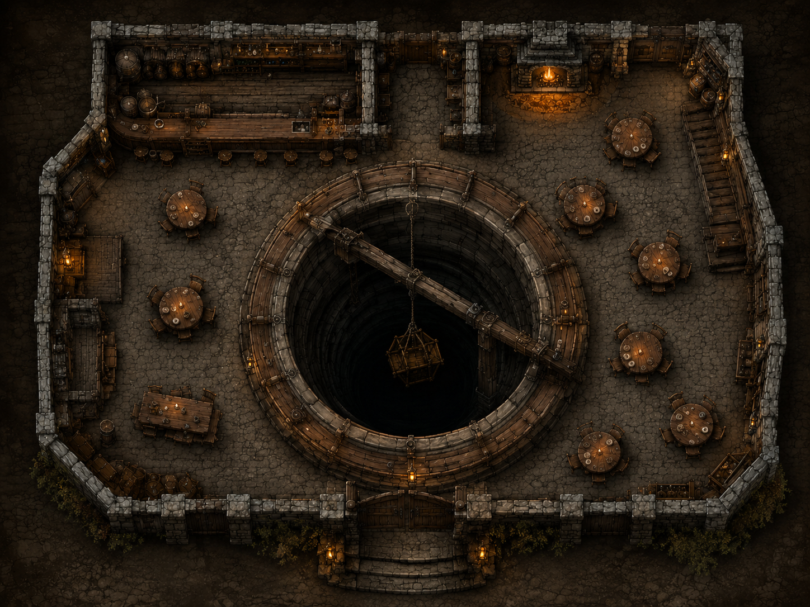

WD-L-I-01
哈欠门 The Yawning Portal
- 档案编号
- WD-L-I-01
- 所在区域
- 城堡区
- 地点类型
- 旅店与酒馆
- 首次到访
- —
- 当前状态
- —
01地点概览
哈欠门是城堡区一座著名的旅店和酒馆。建筑以石材砌成，覆以石板屋顶，并设有数座烟囱。
02空间与布局

- 酒馆大厅
- 占据底层的大部分空间。
- 中央深井
- 开放式深井，半径 40 尺，深 140 尺；实为下沉石塔的外壳。
- 升降装置
- 以绳索与滑轮供冒险者出入深井。
- 上层
- 布置为客房。
03人物与势力
已知人物
- 杜尔南
- 哈欠门老板。
- 邦妮
- 女招待。
- 马崔姆·“三弦”·莫莱格
- 在酒馆演出的吟游诗人。
- 加莱斯特·银鬃
- 常在酒馆停留的领主联盟代理人。
相关势力
待补充
关联事件
待补充
04队伍记录
已发现线索 / 物件
待补充
队伍到访记录
待补充
档案备注
—